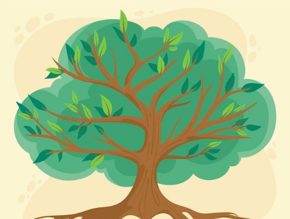

The Role of Language

Human Quest for Understanding
In the human quest for understanding the natural world, the ability to name and classify object found in nature was seen as a first step in knowing. Thus, the scientific search for truth early on recognized the usefulness of language and the ability it gave to make sense of nature. For the ancient Greeks, language was an object worthy of admiration. Words have power. This kind of knowing sprang from the Greek fascination and wonder at the power of words and language
Power of Words
Science, from the Latin word scire (meaning to know), is one kind of knowledge the Greeks wanted to understand. The idea of comprehending words as more than just combinations of sounds led the Greeks to seek out the principles of everyday language. When talking to other people, for example, a meaningful message is created using ordinary sounds. Its meaning is also not diminished by multiplication - the speaker can use the same words over and over again to talk to ten, a hundred, or even a thousand people separately or at the same time.

Common Thread
The same message will be received by everyone. Words, therefore, can function across space and time without reducing their meaning. The first philosophers, as they thrashed about groping for and seeking a unifying principle in nature, sometimes hit upon things such as fire or water. But they believed that something was common in all of these. The many seemingly different things in the natural world must have a unifying factor. There was an inside to be "understood." They sought for this meta phusis, literally meaning "after nature" (De Chardin, 1965). Plato's principle of "One and the Many" refers to the underlying unity among diverse beings in the natural world. For Plato, there is a common intrinsic nature shared by different objects, which determines their real sense. Biologists devised a way to illustrate this principle using a system differentiating between genus and species. Many species belong in one genus. In the 21st century, we are aware more than ever that there is rich diversity in nature, which technology has allowed us to discover (BANWA Natural Science, 2008).